Magna
Sed nisl arcu euismod sit amet nisi lorem etiam dolor veroeros et feugiat.

An Unreal Engine maze-rush minigame - Student project
Project Type:
Game
Platform:
PC
Team Size:
4
Role:
2D Artist, Gameplay Programmer
Engine/Software:
UE 5
Project URL:
Flickering Shadows is an arcade-style 3rd person game, where the player controls a little girl that adventured too far into a dark dungeon. Determined to return with as many artefacts and occult items as possible, the player must direct them through the dark corridors to explore and bring back their prizes. However, if the candle is left too long on its own, strange shadows may come out of hiding to extinguish its light and without it... the dungeon's master will wake.
In this game, the player has to memorize the layout of the maze to optimize their route as best as possible. By picking up and throwing around the items they find, the player can bring them back to the entrance to earn points. But they are under a timed constraint and can only carry one item at a time, which includes the precious candle they use to light their way. Without it, every second is a risk.
This game was made in 1 month as a team of 4 developers, evenly distributed among programming and art/design, with a combination of Unreal Engine's blueprint system and C++ code with assets purchased by the UQAC university. With its short run time, this game allies optimising your path for better scores and random placement of object to bring a fun experience where every run is unique while still contributing to the player's improvement.
The gameplay loop of the game is simple : at the beginning of each new run, the player enters the maze at the top left of the map. They will then need to navigate the corridors by remembering their layout from previous attempts or by the light of the candle, and pick up scattered artefact throughout the map. Each artefact has its value highlighted by a colored outline, letting the player prioritize the most valuable ones, and the further from the entrance the item is, the higher the chance of a high rarity spawning.
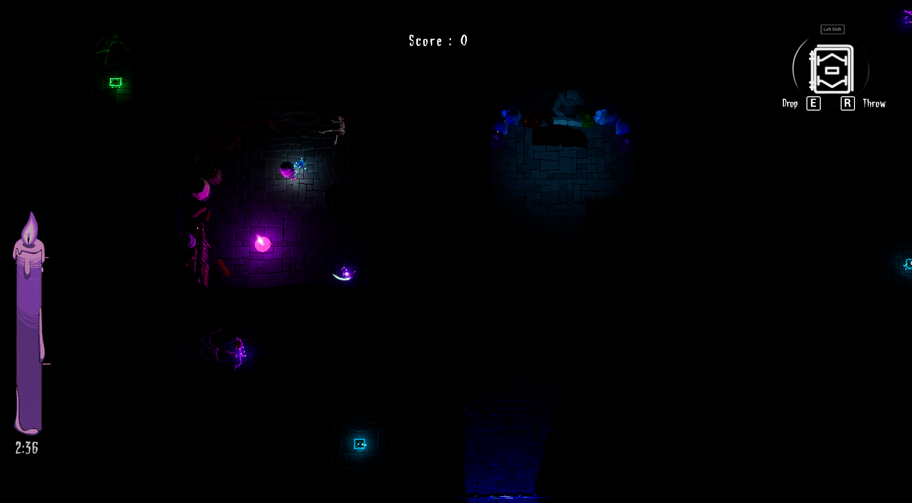
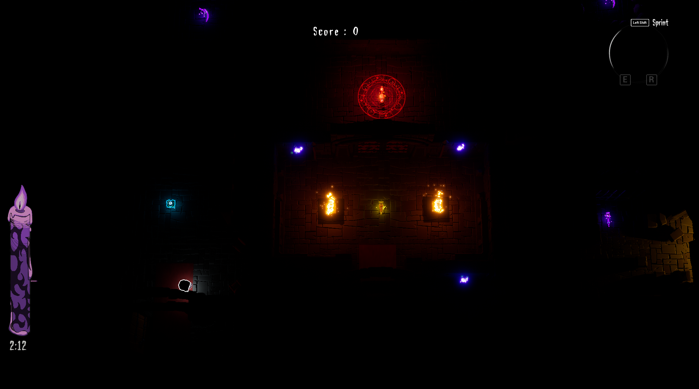
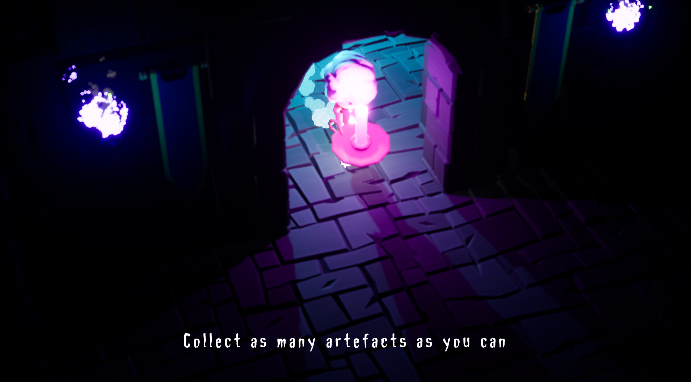
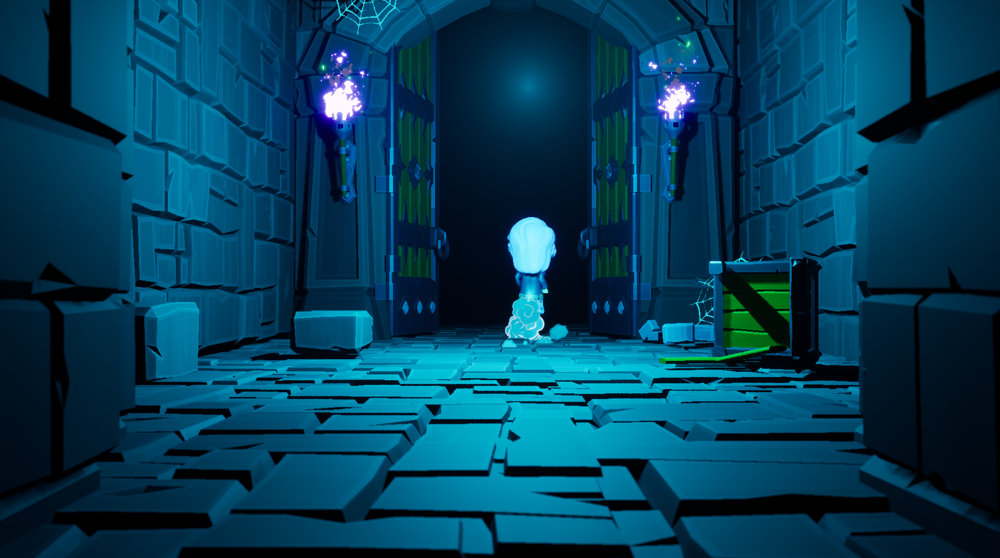
Screenshots from vraious parts of the game
As an arcade game, Flickering Shadows doesn't have persistent data (apart from scores), upgrades or "progress". It relies on players replaying the game over and over to get better at it, and figuring out strategies to increase their score at the end of each run. With a non-random maze, the player can use their previous runs to figure out how the corridors and rooms are set up and map a better route to the best artefact spawning points, or where to throw the items they pick up to gain the most time.
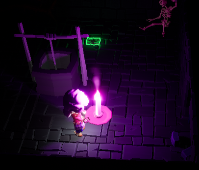
Closeup on the character
Here are the key elements of the game:
The Player: with fixed-position cameras around the maze, the player can walk around, sprint, pick up one item at a time, and either put it down or throw it forwards.
The Candle: main tool of the player, it is both a source of help to navigate and illuminate the areas around and a source of danger, as leaving it alone for too long while moving artefacts around will cause it to go out.
The Ghosts: lurking in the darkness are dark ghosts, all through the maze. When the player is holding the candle, there isn't much they can do, but as soon as they put it down to grab something, the ghosts will try to make their way to it and snuff it out.
The Boss: the candle item lights up the area around it, but it is finite. If the candle runs out, or a ghost reaches it, then the dungeon's boss gets released from its room in the center of the maze and furiously chase the player. If it reaches them before they reach the door and leave, then they will get devoured and lose without any points at all.
The Artefacts: each item can be, like the candle, picked up and thrown. If thrown through the entrance door, they are considered "collected" and their value is added to the run's score.
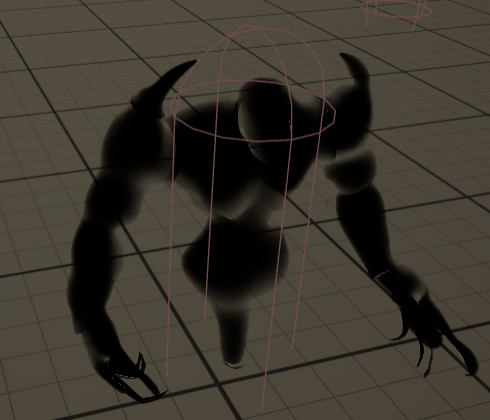
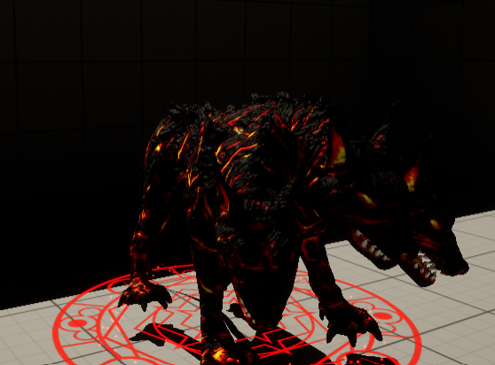
Models for the ghost and boss
Scattered around the maze, the artefacts are items that the player can pick up and move around to bring them back to the entrance of the dungeon. With varying degrees of rarity (normal, rare, epic, legendary and mythical) each marked with its own color of outline to notice them, each item has a certain score value depending on its rarity, giving the player the opportunity to choose if one is worth the effort or if they should keep going deeper in the dark.
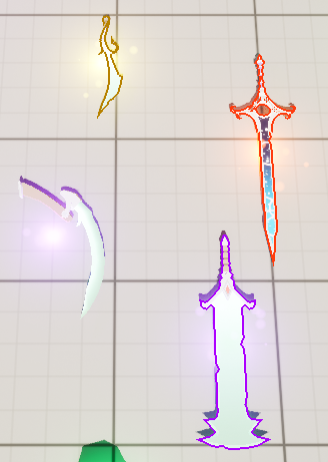
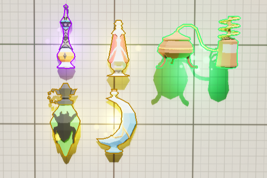
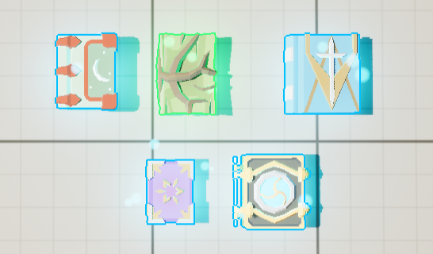
In-engine view of some of the artefacts
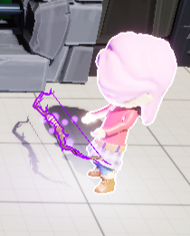
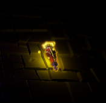
Artefacts when held (left) and in the game (right)
To make things more interesting for the players that want to truly optimize their scores, artefacts can come in sets. Belonging to the same "family" of items, either connected by a theme or the same type of item, means that each new artefact of that family getting brought back outside gets an increasing score bonus. That way, a low rarity artefact may become well worth it by adding to a set and increasing in value.
Furthermore, each individual artefact is given its own unique name, and each artefact set has its own name as well, both visible when picking up an item from the ground. When doing so, an icon in the HUD UI will show what type of item is currently being held, making sure the player can always tell what is being carried.
Artefact UI Icons
In order to give the player a better chance to learn the layout of the game and figure out ways to cut corners and optimize their path, the game stores their position all along the run. Once the game is over and they are met with the end screen, along with displaying their score the game will show a simplified replay of the path they took.
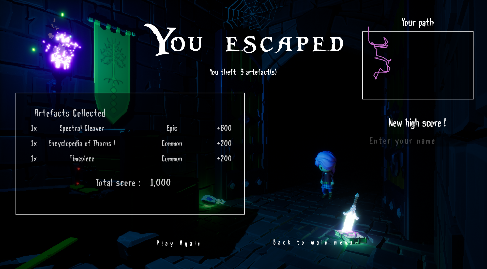
End Screen of the game
To achieve this effect, the game saves every second the player's position relative to the corners of the maze into a long list. once the run is over, the game iterates over the list with a time delay between each element, and computes a new point to add to the drawn line. That way, the player gets a sped up version of their run playing out, and can notice where they got stuck or lost time, as well as visualise the route they took clearly.
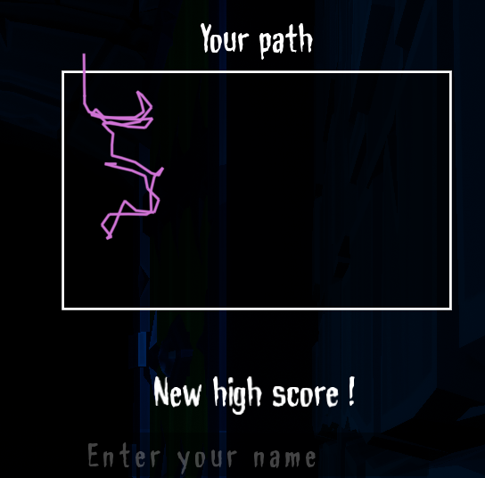
Close up on the minimap element